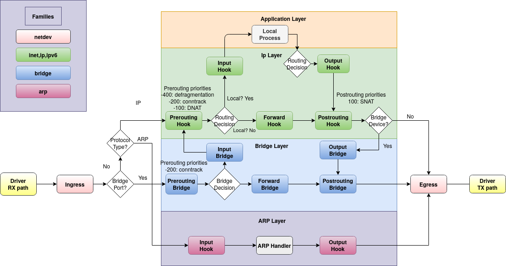

nftables 使用教程
新版本的 openwrt 使用 fw4 防火墙，默认已经从 iptables 切换到了 nftables，语法有了很大的变化，下面介绍 nftables 的使用方法。
路由表配置
路由表是 nftables 中最顶层的容器，它管理着 chains, sets, maps, flowtables, 和 stateful objects.
family 集合
每个路由表都只能属于一个 family 集合，可用的 family 有：
- ip 监听 ipv4 的流量
- ip6 监听 ipv6 的流量
- inet 同时监听 ipv4 和 ipv6 的流量
- arp 监听 ARP-level 地址解析协议的流量
- bridge 监听 bridge 桥接流量 如交换机
- netdev 用于监听某个单独网卡的流量
基本语法
新建路由表：
nft add table ip tabletest
以上命令在 ip 集合中新建一个名称为 tabletest 的路由表，可以处理 ipv4 流量
路由表列表：
# 列出所有路由表
nft list tables
# 列出所有 ip 集合的路由表
nft list tables ip删除一个路由表：
nft delete table ip tabletest
路由链配置
不同于 iptables，nftables 没有预定义的链，如 input output 等。想要在某个环节处理流量，需要定义一个自定义名称的基本链，然后将其挂载在一个特定的 netfilter hook 钩子上。下图是流量包在 linux 网络中的传输路径：

流量传输到本机后开始监听 prerouting 和 input hooks，然后经过本机处理后流向 output -> postrouting hooks。
注意如果本机作为 router 路由使用，需要开启 ip 转发：
echo 1 > /proc/sys/net/ipv4/ip_forward
如果传入本机的流量目标地址不是本机，则受 forward hook 监听，这类流量的路径是 prerouting -> forward -> postrouting。
以下是 netfilter 可用的 chains 和 hooks 列表：
基本语法
建立基本链，挂载在一个特定的 netfilter hook：
nft add chain [<family>] <table_name> <chain_name> { type <type> hook <hook> priority <value> \; [policy <policy> \;] [comment \"text comment\" \;] }
注意，由于 nft 语法使用了特殊字符，如: ;，在命令行中执行需要加转义符 \。或者可以使用单引号 '` 将 nft 后的语句包起来，以下两种写法效果相同：
nft add chain ip tabletest input { type filter hook input priority 0 \; }
nft 'add chain ip tabletest input { type filter hook input priority 0 ; }'
另一种方法是运行 nft 在交互模式，执行以下命令后就可以不加转义符: nft -i。
上面的命令在 tebletest 路由表中新建一个 input 链，挂载在 filter 路由链的 input hook 上。这样就可以监听所有进入本地的流量。
priority 决定了所有链的顺序，例如在 filter input hook 上挂载了多个自定义链，通过 priority 决定其执行顺序。数值越低执行优先级越高，例如 -12, -1, 0, 10。如果给多个挂载在同一个 hook 上的自定义基本链同样的 priority，它们的先后执行顺序就是不确定的。
添加以下命令后就可以在 tabletest 基本链中监听本机输出的流量：
nft 'add chain ip tabletest output { type filter hook output priority 0 ; }'
如果不定义大括号中的内容，也就是不挂载在特定 hook 上，则路由链不会监听任何流量。
policy 定义了默认的策略，可用的默认策略为：accept 和 drop，如果路由链中的规则都没有匹配则会应用默认策略：
- accept 没有匹配到的流量继续在网络层传输
- drop 没有匹配到的流量被丢弃
type 定义了挂载的基本 chain 类型，可用的基本链类型：
- filter, 用于过滤流量包
- route, 用于重路由，等同于 iptables 的 mangle 路由链的 output hook (其他 mangle hooks 可以使用 filter 代替)
- nat, 用于运行 Networking Address Translation (NAT). 只有第一个 nat 流量包会匹配到此链剩余的包会跳过此链，因此尽量不要使用此链过滤流量
hook 定义了挂载的基本链 hook，可用的 hooks 如下：
- ingress 只能用于 netdev 和 inet family: 监听来自于 NIC driver 的流量, 早于 prerouting.
- prerouting: 监听所有在 routing 前的入口流量. 流量可能重定向到 local 或 remote systems.
- input: 监听所有被路由或重定向到 local system 的入口流量
- forward: 监听所有不被重定向到 local system 的入口流量
- output: 监听所有在 local machine 被管理的出口流量
- postrouting: 监听所有被路由后的即将离开 local system 的出口流量
列出一个路由表的所有路由链：
nft list ip table tabletest
列出一个路由表的指定路由链：
nft list chain ip tabletest output
基本规则配置
通过规则可以控制路由链上的流量。
基本语法
添加规则：
nft add rule ip tabletest output ip daddr 8.8.8.8 counter
以上命令会在 tabletest 路由表的 output 链中添加一条规则，匹配出口流量中 ip 地址为 8.8.8.8 的流量并对匹配次数计数，nftables 中 counter 会默认启用即使不写。以上命令相当于 iptables 中的 -A 命令。
列出某个链包含的规则：
root@OpenWrt:~# nft list chain ip tabletest output
table ip tabletest {
chain output {
type filter hook output priority filter; policy accept;
ip daddr 8.8.8.8 counter packets 0 bytes 0
}
}下面测试以上规则是否生效，执行以下命令：
ping -c 1 8.8.8.8再次查看此链的规则：
root@OpenWrt:~# nft list chain ip tabletest output
table ip tabletest {
chain output {
type filter hook output priority filter; policy accept;
ip daddr 8.8.8.8 counter packets 1 bytes 84
}
}可以看到已经有一次计数了。
指定位置添加规则：
nftables 中必须通过 handle num 编号来在指定位置添加规则，需要通过 -a 查看链中已经存在的规则的编号：
nft -n -a list table ip tabletest
-n 可以按数字顺序排号避免出现重复编号。再次查看链中的规则：
root@OpenWrt:~# nft -n -a list table ip tabletest
table ip tabletest { # handle 4
chain output { # handle 1
type filter hook output priority 0; policy accept;
ip daddr 8.8.8.8 counter packets 0 bytes 0 # handle 5
}
}handle 5 就是这条规则的编号。
下面我们通过 handle 索引在这条规则后添加一条新规则：
nft add rule ip tabletest output position 5 ip daddr 127.0.0.8 drop
查看链中的规则：
root@OpenWrt:~# nft -n -a list table ip tabletest
table ip tabletest { # handle 4
chain output { # handle 1
type filter hook output priority 0; policy accept;
ip daddr 8.8.8.8 counter packets 0 bytes 0 # handle 5
ip daddr 127.0.0.8 drop # handle 6
}
}如果要在某条规则前插入一条规则需要使用 insert 指令：
nft insert rule ip tabletest output position 5 ip daddr 127.1.1.8 drop
查看效果：
root@OpenWrt:~# nft -n -a list table ip tabletest
table ip tabletest { # handle 4
chain output { # handle 1
type filter hook output priority 0; policy accept;
ip daddr 127.1.1.8 drop # handle 7
ip daddr 8.8.8.8 counter packets 0 bytes 0 # handle 5
ip daddr 127.0.0.8 drop # handle 6
}
}在某条链最前面添加一条规则：
nft insert rule ip tabletest output ip daddr 192.168.2.1 counter
在最前面添加规则就不需要指定 handle 了。
替换某条规则：
替换一条规则也需要 handle 编号。下面示例会替换 handle 5 为新的规则：
nft replace rule ip tabletest output handle 5 ip daddr 1.1.1.1
删除规则：
同样的，删除某一条规则也需要获取这条规则的 handle 编号。
删除 tabletest 链的 handle 7 规则：
nft delete rule ip tabletest output handle 7
删除链中所有规则：
nft flush chain ip tabletest output
删除路由表中所有链的所有规则：
nft flush table ip tabletest
ruleset 层级的操作
显示所有 family 的所有 rule 规则：
nft list ruleset
显示某一个集合的所有 rule：
% nft list ruleset arp
% nft list ruleset ip
% nft list ruleset ip6
% nft list ruleset bridge
% nft list ruleset inet清除所有集合的所有规则：
nft flush ruleset
清除某一个集合的所有规则：
% nft flush ruleset arp
% nft flush ruleset ip
% nft flush ruleset ip6
% nft flush ruleset bridge
% nft flush ruleset inet备份规则到文件：
# 备份所有集合的所有规则
nft list ruleset >> backup.nft
# 备份 ip 集合的所有规则
nft list ruleset ip >> backup.nft从文件恢复规则：
nft -f backup.nft
以 json 格式显示所有规则：
nft --json list ruleset
流量元信息匹配
通过 meta 选择器可以进行流量匹配或流量设置。下面简单介绍几个常用的匹配模式，更加详细的参考官方资料：https://wiki.nftables.org/wiki-nftables/index.php/Matching_packet_metainformation
iifname 匹配网卡名称：
# lo 网卡的入口流量会被接收
nft add rule tabletest input meta iifname lo acceptmark 匹配流量标记：
# 流量标记为 123 的出口流量计数
nft add rule tabletest output meta mark 123 counterskgid 匹配流量由特定 gid 用户产生的数据：
# 匹配来自 gid 用户 1000 的流量
nft add rule tabletest output meta skgid 1000 counter流量头信息匹配
通过 ip {saddr | daddr} 可以匹配 ipv4 的 源流量或目标流量：
# 匹配来自 192.168.1.100 且去往 192.168.1.1 的流量并计数
nft add rule tabletest input ip saddr 192.168.1.100 ip daddr 192.168.1.1 counter参考链接
nftables HOWTO documentation page
Nftables families
Netfilter hooks
Operations at ruleset level
标签：无